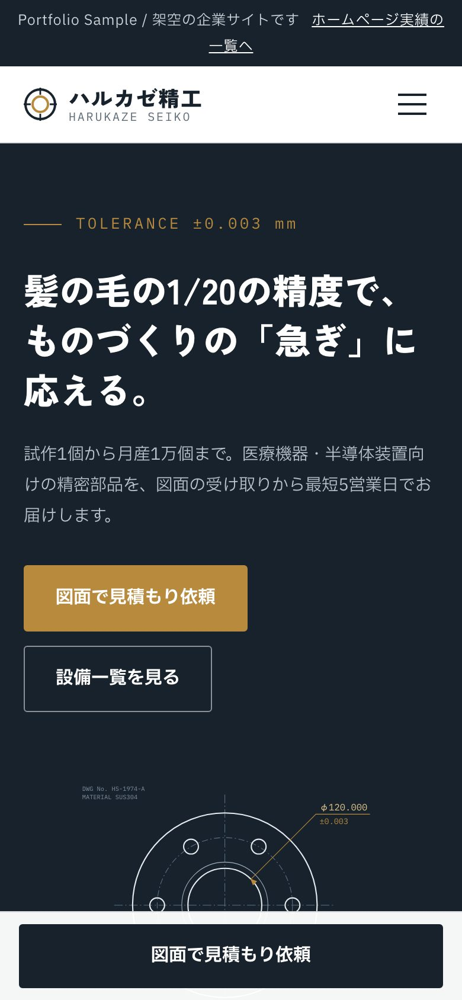
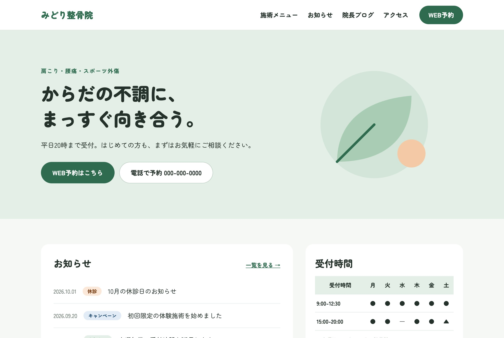
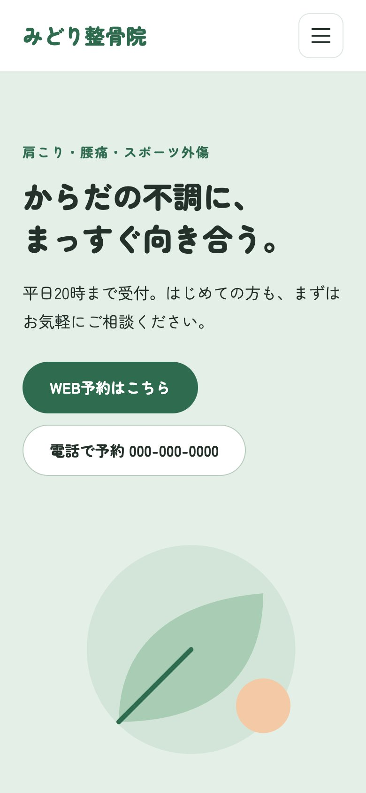

01
CORPORATE / MANUFACTURING
ハルカゼ精工株式会社
精密金属加工メーカーのコーポレートサイト。取引先からの見積もり依頼と採用を目的に、鉄紺×真鍮色で精度へのこだわりを伝える7ページ構成。
- TOP
- 会社案内
- 事業・技術
- 導入事例
- お知らせ
- 採用情報
- お問い合わせ


精密金属加工メーカーのコーポレートサイト。取引先からの見積もり依頼と採用を目的に、鉄紺×真鍮色で精度へのこだわりを伝える7ページ構成。

整骨院のWordPressサイト。テーマをゼロから自作し、お知らせ・施術メニュー・院長ブログ・受付時間を院のスタッフが管理画面から更新できる構成。予約フォームは入力→確認→完了の3段階。

